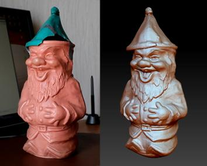
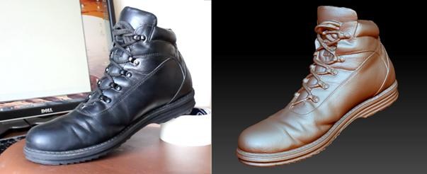
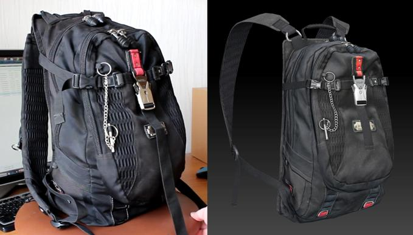
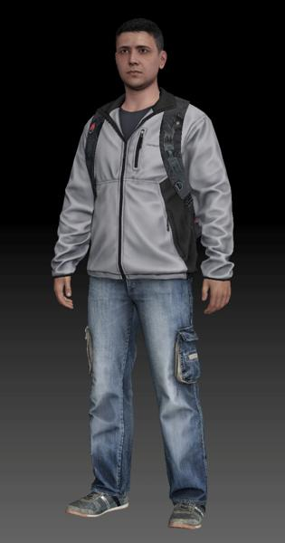
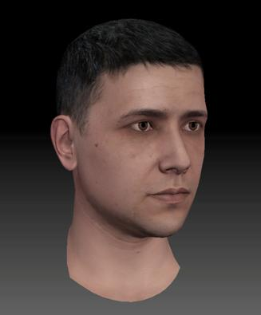
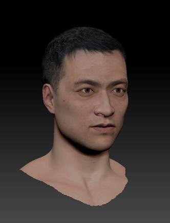
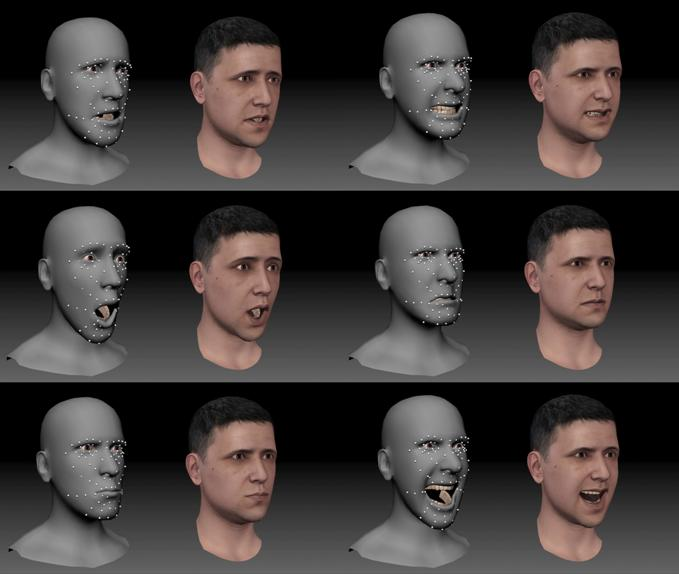

|
In November 2014 during the interior works in my new apartment, I decided to purchase a laser level. |
|
After I got this device in my hands and played a little bit with it projecting cool laser lines on the surrounding objects, some idea suddenly made a friendly visit to my head. It was an idea to build a homemade 3d scanner with help of this toy. I've read that it's possible many years ago, but I have not had a chance to try. So I began to research how to do it.
Studying tons of information on the subject led me to the conclusion that there are more advanced methods and using a projector instead of laser I can get even better results. After purchasing all the necessary equipment in February 2015 I started active development and testing.
At first I was training on static middle scale objects like gnome statue and different boots:
|


|
Then I switched to scan larger scale and more complex object: |

|
After success with static objects I started to research how to scan people heads. It was a challenge, because people can be static only when they are dead. Fortunately I found a way with a couple of tricks to scan them, leaving alive: |
|
Even harder challenge was a scanning of body parts, because body moves even more. But with some more tricks I've got a good result: |

|
In the end I was able to assemble a full character using a scanned parts: |

|
So now I have an ability to create scanned 3d characters using this technology. This technology has already been tested and 100% works. But I still have some things in ToDo list which can help me make the process of scanning faster, cleaner and more convenient. Also, as far as I know, currently there is special need for Japanese characters. The solution of the problem is possible by using a special procedure of Japanization™. |


|
The movement of the object is not less important for realism than its mesh and texture. Perhaps it's even more important. Most of the current body animations we have are pretty "woodish". Also, due to static faces characters look dead. And the biggest pain in the ass is an animation of fingers. It is a "black hole" for the time when you create or fix it manually and after all this the result is still not very good. So best solution would be to capture the movement of the body, face and fingers at the same time to receive a full synchronized and realistic animation of whole character.
I decided to start my tests from motion capture of face because it requires the smallest number of cameras. I recorded some performance using 3 cameras, then I made the tracking of markers, after that with help of some scripting I created bones which deform mesh of my scanned face and after that with help of other scripting I made a retargeting of this animation to face of other character. |

|
Necessary to note that success result of face mocap is 95% proof of concept for body mocap too, because it works same way. I just need to buy more cameras to test it what I'm going to do soon. Mocap of fingers will be more tricky but I already have an idea how it should work. So body mocap and fingers mocap are next in my research ToDo list. |
CONCLUSION
|
I'm going to offer you an integral service of the production of scanned characters with ultimate mocap animations (body+face+fingers) which are ready for import into Lumion. It will be a characters which have a quality of top level AAA games.
At the moment scanning technology is 100% ready for production and it only needs to be a bit polished and improved. Mocap technology is 50% ready, I need to get more cameras and test body and fingers mocap. |